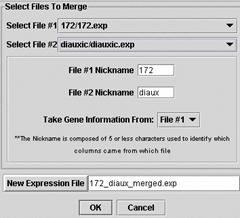

Merge Expression Files... (Control M)

Merging expression files allows you to combine data from multiple chips so you can evaluate time course data, or other related data sets. You merge files one at a time and provide nicknames to assist MAGIC in keeping track of the soon to be combined data. Also, you can select one set of gene annotations as the one that is retained with the merged data set. A new file will be created, so your two original files are not lost.